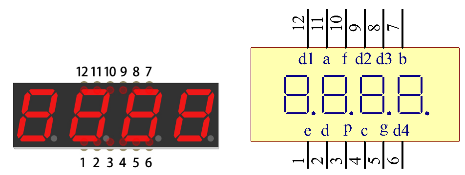
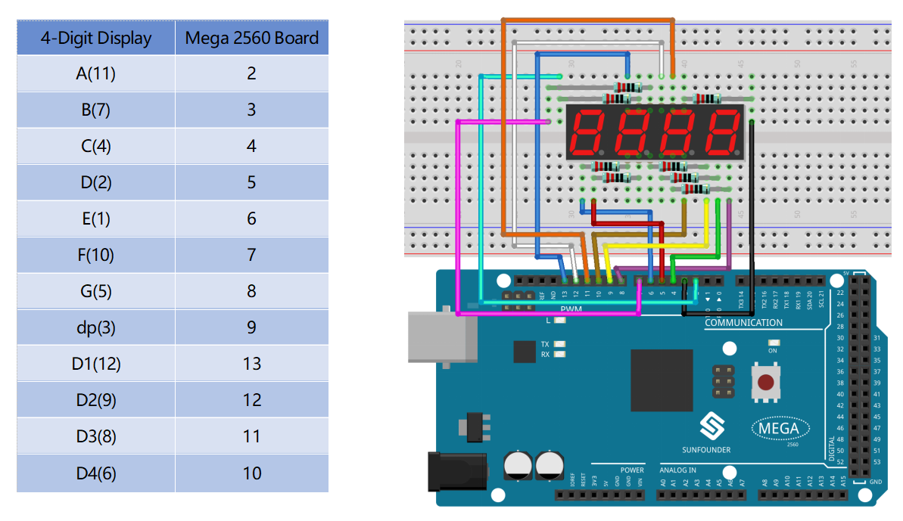
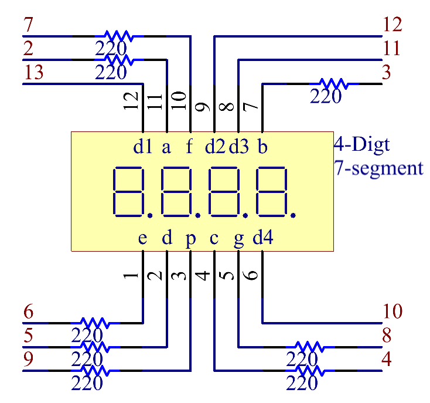
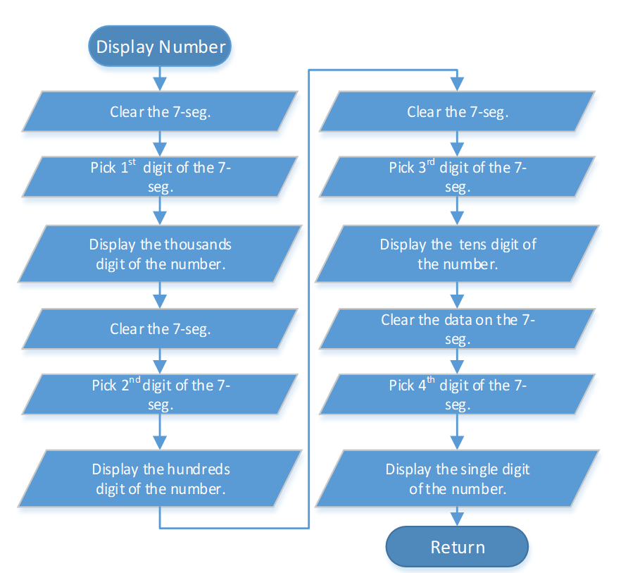
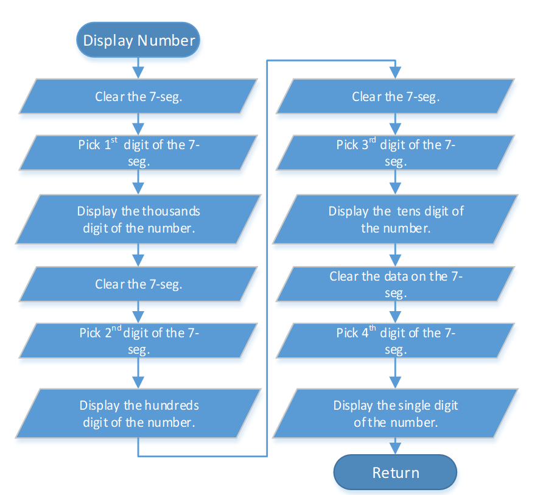

2.7 4-Digital 7-Segment Display¶
Overview¶
In this lesson, you will learn about the 4-Digital 7-Segment Display. It consists of four 7-segment displays working together so as to display 4 digit numbers.
Components Required¶

Component Introduction¶
The 4-digtal 7-segment display works independently. It uses the principle of human visual persistence to quickly display the characters of each 7-segment in a loop to form continuous strings.
For example, when “1234” is displayed on the display, “1” is displayed on the first 7-segment, and “234” is not displayed. After a period of time, the second 7-segment shows “2”, the 1st 3th 4th of 7-segment does not show, and so on, the four digital display show in turn. This process is very short (typically 5ms), and because of the optical afterglow effect and the principle of visual residue, we can see four characters at the same time.

Fritzing Circuit¶
The wiring between the 4-digit 7-segment display and the Mega 2560 Board board is as shown below:
Schematic Diagram¶
Code¶
The code uses TimerOne.h library. Refer to Part 4 - 4.1 Add Libraries to import library.
Code Analysis¶
 

There are two points needing your attention:
①Because every segment display works independently in the 4-Digital 7-Segment Display, the principle of visual persistence is applied to quickly display every 7 segment character in turn to form a continuous character string.
Refer to Part 2 - 2.5 7-Segment Display to check the details of the number display of the 4-Digital 7-Segment Display.
②In this example, a library TimerOne.h is used to realize the function of counting.
#include "TimerOne.h"
Library Functions：
void initialize(long microsenconds=1000000)
You must call this method first to use any of the other methods. You can optionally specify the timer’s period here (in microseconds), by default it is set at 1 second.
Note
This breaks analogWrite() for digital pins 9 and 10 on Arduino.
void attachInterrupt(void (*isr)(), long microseconds=-1);
Calls a function at the specified interval in microseconds. Be careful about trying to execute too complicated of an interrupt at too high of a frequency, or the CPU may never enter the main loop and your program will ‘lock up’. Note that you can optionally set the period with this function if you include a value in microseconds as the last parameter when you call it.
void detachInterrupte();
Disables the attached interrupt.
Phenomenon Picture¶